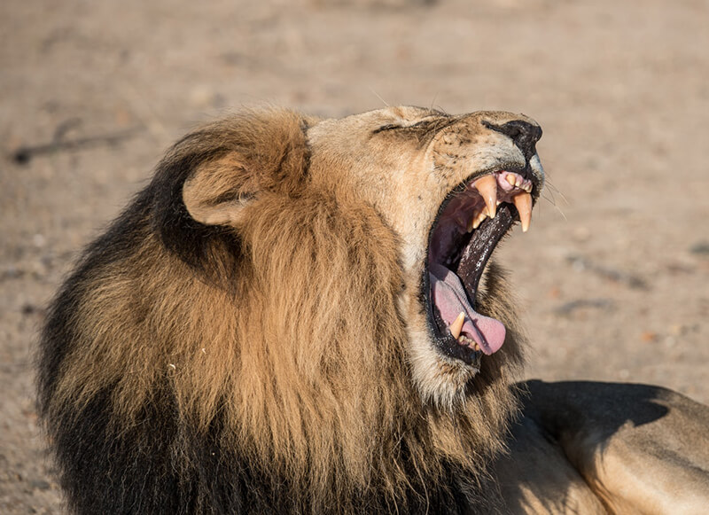
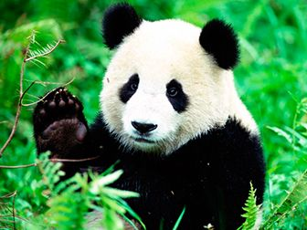
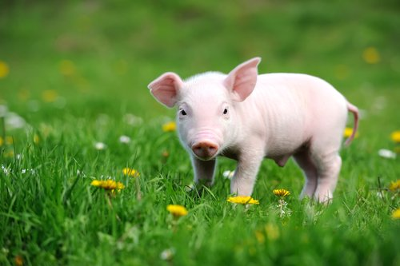

Este página ha sido creado por Alberto Garcia Blasco
REDES SOCIALES
|  |  |  |
CARNIVOROS |
HERBIVOROS |
OMNIVOROS |
| No es novedad que al hablar de animales carnívoros pensemos directamente en que son aquellos que se alimentan de carne. La palabra carnívoro proviene del latín y significa comedor de carne. También son conocidos como animales zoófagos y pertenecen al orden Carnívora estos animales se alimentan de carroña. Lo que los clasifica además como consumidores secundarios, es decir, que por el consumo de carne de otras especies obtienen su energía | Son considerados animales herbívoros aquellos que se alimentan principalmente de seres autótrofos, es decir, de los organismos que producen sus propios alimentos, así como lo son las plantas y algas, en sí, son los que se alimentan de materia vegetal. A estos también se les conocen como fitófagos y son los que representan a los principales consumidores, estimándose que el 50% de la fauna en el mundo pertenecen a esta clasificación, siendo una pieza significativa en la cadena alimenticia. | Un animal omnívoro es aquel que se alimenta de plantas y de otros animales en su vida diaria. Su organismo no está adaptado ni para comer carne ni plantas o vegetales exclusivamente, por lo que su cuerpo está preparado para digerir tanto una cosa como la otra. De hecho, su mandíbula combina distintos tipos de dientes para masticar tanto una clase de alimento como otra. Tienen unos fuertes molares que les proporcionan mucho espacio para masticar como los herbívoros y, además, cuentan con caninos con una forma perfecta para desgarrar, algo característico de los carnívoros. |